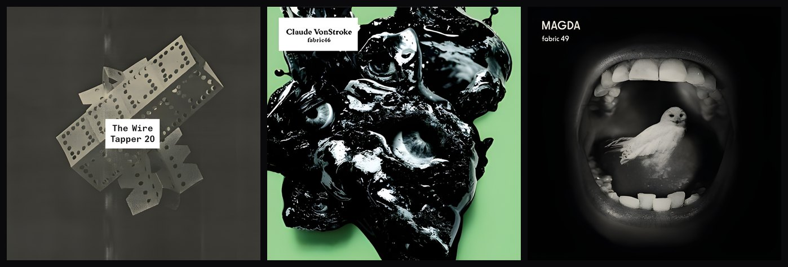
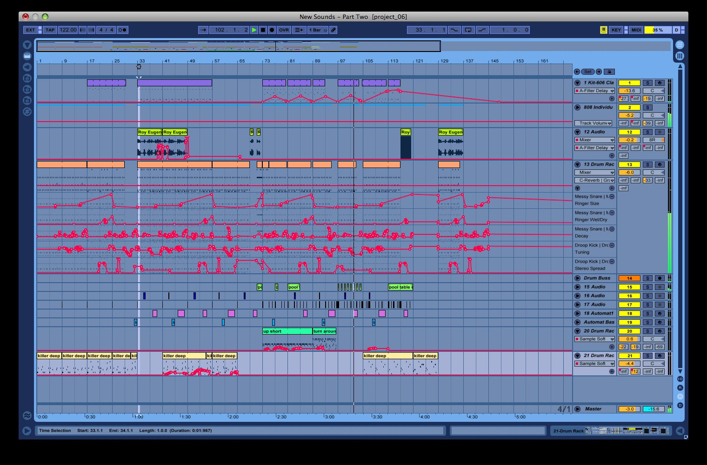

Records
I make electronic music as Isomer Transition and as RJ Valeo. It's the reason I build music software: I'm the user.
AudioCreative production
6labels: Type, Archipel, Hobby Industries, Dope, Moodgadget, IO
2fabric mix CDs: 46 and 49
1Wire Tapper feature in The Wire
4Kvisualizers for my own releases
The problem
- Make records that hold up next to the music I love.
- Get them into the hands of DJs and labels I respect.
What I did
- Wrote, produced, mixed and released records as Isomer Transition and RJ Valeo.
- Released on Type Records, Archipel, Hobby Industries, Dope Recordings, Moodgadget and IO Records.
- Licensed tracks to Claude VonStroke (Dirtybird) for fabric 46, and to Magda (Minus) for fabric 49.
- Made the 4K visualizers for my own releases.
What changed
- Featured on The Wire's Wire Tapper.
- Tracks in two fabric mix CDs.
- Every tool I build is tested on my own music first.

